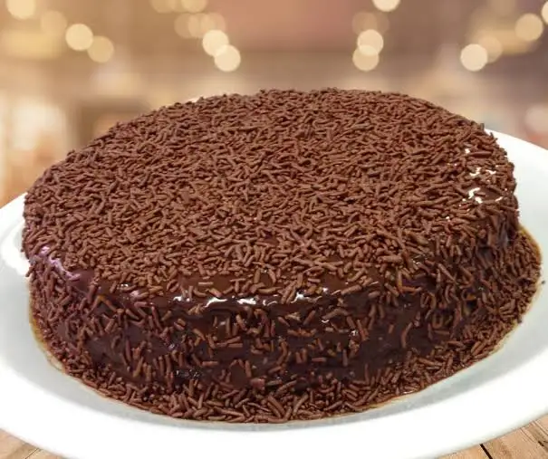

Bolo de Chocolate
Um bolo fofinho e fácil de fazer

Ingredientes
Massa
- Ovos: 3 unidades
- Açúcar: 1 xícara (chá)
- Óleo: 100 ml
- Chocolate em pó (ou achocolatado): 1 xícara (chá)
- Leite morno: 1 xícara (chá)
- Farinha de trigo: 2 xícaras (chá)
- Sal: 1 pitada (para realçar o sabor)
- Fermento em pó: 1 colher (sopa)
Cobertura
- Leite condensado: 1 caixinha (395 g)
- Creme de leite: 1 caixinha (200 g)
- Chocolate em pó: 3 a 4 colheres (sopa)
- Manteiga: 1 colher (sopa)
Modo de preparo
- Prepare a massa: No liquidificador, bata os ovos, o açúcar, o óleo, o chocolate em pó e a água quente até obter uma mistura homogênea.
- Incorpore os secos: Transfira a mistura líquida para uma tigela e adicione a farinha de trigo peneirada, mexendo bem com um fouet ou colher. Por último, adicione o fermento e misture delicadamente.
- Asse: Despeje a massa em uma forma untada e enfarinhada (aproximadamente 22x30cm). Leve ao forno preaquecido a 180ºC por cerca de 30 a 40 minutos. Faça o teste do palito para confirmar.
- Faça a cobertura: Em uma panela, misture o leite condensado, o chocolate em pó e a manteiga. Leve ao fogo baixo, mexendo sempre, até começar a ferver e desgrudar levemente do fundo da panela.
- Finalize: Despeje a cobertura ainda quente sobre o bolo já assado. Se preferir, salpique chocolate granulado.